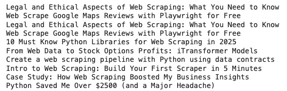

📌 Što je Web scraping?
📌 Osnovni pojmovi
Podatke možemo prikupljati izravno s web stranica tehnikom pod nazivom Web scraping.
To je postupak izdvajanja podataka s web stranice koji je puno brži i učinkovitiji od samostalnog
prikupljanja podataka. Međutim, ako vam je potrebna samo relativno mala količina podataka ili ih ne morate ih stalno ažurirati onda može biti jednostavnije samostalno prikupiti podatke.
Zašto Web Scraping?
Za učinkovito prikupljanje podataka s web stranica potrebno je razumjeti sljedeće pojmove:
Web scraping, općenito je legalan ako prikupljate podatke s interneta koji su javno dostupni. Ako su informacije javno dostupne bez potrebe za prijavom ili zaobilaženjem sigurnosnih mjera, onda to ne bi trebao biti problem. No, za svaki slučaj, uvijek trebali bi uzeti u obzir uvjete internetske stranice, čije podatke želite dohvatiti. Često se na stranicama izričito zabranjuje izvlačenje podataka premda su javno dostupne. Kod zabrane se može raditi o zaštiti intelektualnog vlasništva (eng. copyright) koja se odnosi na tekst i slike. Posebno treba biti oprezan kad se radi o osobnim podacima. Čak i ako su dijelovi stranice javno dostupni, ne znači da slobodno možete raspolagati s tim informacijama.
Ako na stranici ništa ne piše, onda možete provjeriti informacije u datoteci robots.txt. Sadržaj datoteke upućuje razne automatske alate na dijelove kojima smije ili ne smije pristupiti. Poštivanjem tih uputa sprječava se preopterećenje poslužitelja i potencijalno blokiranje pristupa stranici. Sadržaj datoteke možete jednostavno provjeriti dodavanjem robots.txt na kraju URL-a.
Primjer za pmfst stranicu:
https://www.pmfst.unist.hr/robots.txt
Rezultat:
User-agent: Scrapy
Allow: /
sitemap: https://www.pmfst.unist.hr/sitemap.xml
User-agent: *
# disallow all files in these directories
Disallow: /cgi-bin/
Disallow: /wp-admin/
Disallow: /archives/
Disallow: /comments/feed/
Prvi redak (User-agent...) služi za identificiranje bot-a, a drugi (Allow: /) kaže kako smije pristupiti svim stranicama. Za stranice ili dijelove koji nisu dozvoljeni treba pisati Disallow.
Pri prikupljanju podataka morate paziti i rasporediti vaše zahtjeve u neku razumnu frekvenciju kako ne bi preopteretili poslužitelj i kako bi bilo dovoljno vremena da obradi vaš zahtjev.
Za prikupljanje podataka možete koristiti razne alate i Python biblioteke. Primjeri:
Scrapy ne radi dobro s Google Colab bilježnicama.
U novijim verzijama Google Colab bilježnica nije potrebno dodatno instalirati Beautiful Soup ako vam nije potrebna neka druga verzija:
!pip install beautifulsoup4
Aktualna verzija je 4, a detalje možete pronaći na poveznici:
Za početak rada potrebno je uključiti biblioteke:
.py
import requests
from bs4 import BeautifulSoup
import pandas as pd
Kako bi mogli izvući podatke sa stranice, potrebno je pogledati kako izgleda HTML kôd te stranice te identificirati elemente koji sadrže informacije. Primjer:
.py
url = "https://medium.com/tag/web-scraping"
content = requests.get(url).content
U gornjem primjeru smo preuzeli sadržaj sa stranice u varijablu content.
Ispod, u prvom koraku stvaramo BeautifulSoup objekt parsiranjem sadržaja iz varijable content. Obzirom da znamo da se radi o HTML sadržaju, onda pišemo "html.parser".
U drugom koraku iteriramo po svim div elementima koji imaju atribut title. To ćemo utvrditi pomoću našeg web preglednika (npr. Chrome, desni klik ⇒ Inspect). Zatim pronalazimo element h2 koji ima klasu bf gdje prolazimo kroz tekstualni sadržaj elementa h2.
Na kraju rezultat spremamo u stupac "Naslovi". Tu smo prikupili samo jedan niz (stupac) koji se zove titles.
.py
# 1. stvaranje BeautifulSoup objekta
soup = BeautifulSoup(content,"html.parser")
# 2. Iteriranje po HTML elementima:
titles = []
for a in soup.findAll('div', attrs={'title':True}):
h = a.find('h2', attrs={'class':'bf'})
for t in h:
print(t.text)
titles.append(t.text)
df = pd.DataFrame({"Naslovi": titles})
df
Primjer kako može izgledati izlaz (ovisno o trenutnom sadržaju stranice):

Opis:
Zadatak je pronaći 10 naslova pomoću find_all() funkcije. Uvidom u kod možemo vidjeti da naslovi izgledaju ovako:
.html
<h2 data-testid="card-headline" class="sc-8ea7699c-3 dhclWg">Naslov<!-- --></h2>
Klasa nam u ovom slučaju ne odgovara već ćemo tražiti element h2 koji ima atribut data-testid s vrijednosti card-headline.
Rješenje (napomena: ako se promijeni stranica, primjer neće raditi):
.py
import requests
from bs4 import BeautifulSoup
# URL za izvlačenje podataka
url = "http://www.bbc.com/news"
# Slanje GET zahtjeva
response = requests.get(url)
# Parsiranje sadržaja kojeg smo dobili u odgovoru
soup = BeautifulSoup(response.content, "html.parser")
# Tražimo h2 element s atributom, ali samo prvih 10
headlines = soup.find_all("h2", attrs={"data-testid": "card-headline"})[:10]
# Ispis
for h in headlines:
print(h.text)
U prethodnom primjeru prikupili smo samo naslove (headlines), ali to najčešće nije slučaj. Kako bi prikupili ostale podatke potrebno je pogledati nadređeni element u DOM hijerarhiji:
.html
<div data-testid="card-text-wrapper">
<div>
<div>
<h2 data-testid="card-headline">TITLE</h2>
</div>
</div>
<p data-testid="card-description">DESCRIPTION
<div>
<span data-testid="card-metadata-lastupdated">41 mins ago</span>
<div data-testid="card-metadata-separator"></div>
<span data-testid="card-metadata-tag">TOPIC</span>
</div>
</div>
U gornjem primjeru izostavljene su klase koje su inače dio stvarne stranice te su zamijenjene stvarne vrijednosti s:
Vrijeme nećemo koristiti jer se zapisuje na razne načine. Možemo identificirati atribute:
Odvojimo učitavanje biblioteka i slanje zahtjeva tako da ne moramo svaki put ponovo slati zahtjev dok testiramo:
.py
import requests
from bs4 import BeautifulSoup
url = "http://www.bbc.com/news"
response = requests.get(url)
Parsiranje:
.py
soup = BeautifulSoup(response.content, "html.parser")
card_wrappers = soup.find_all("div", attrs={"data-testid": "card-text-wrapper"})[:10]
# title, description, topic
for wrapper in card_wrappers:
title = wrapper.find("h2", attrs={"data-testid": "card-headline"}).text
description = wrapper.find("p", attrs={"data-testid": "card-description"}).text
topic_element = wrapper.find("span", attrs={"data-testid": "card-metadata-tag"}).text
print(f"Title: {title}")
print(f"Description: {description}")
print(f"Topic: {topic}")
print()
Nakon što to izvršimo, moguće je da ćemo dobiti grešku ako neke od kartica nemaju "topic".
Konačno rješenje:
.py
soup = BeautifulSoup(response.content, "html.parser")
card_wrappers = soup.find_all("div", attrs={"data-testid": "card-text-wrapper"})[:10]
for wrapper in card_wrappers:
title = wrapper.find("h2", attrs={"data-testid": "card-headline"}).text
description = wrapper.find("p", attrs={"data-testid": "card-description"}).text
topic_element = wrapper.find("span", attrs={"data-testid": "card-metadata-tag"})
if topic_element:
topic = topic_element.text
else:
topic = "N/A"
print(f"Title: {title}")
print(f"Description: {description}")
print(f"Topic: {topic}")
print()
Ako želite spremiti podatke u dataframe, onda je potrebno prije for petlje koja prolazi kroz kartice (card_wrappers) dodati varijablu: data = [].
Unutar petlje pišemo: data.append({"title": title, "description": description, "topic": topic})
Dataframe ćemo dobiti naredbom: df = pd.DataFrame(data)
Spremanje obavljamo naredbom: df.to_csv("bbc_news.csv", index=False)